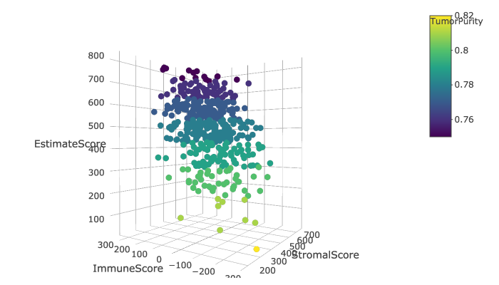
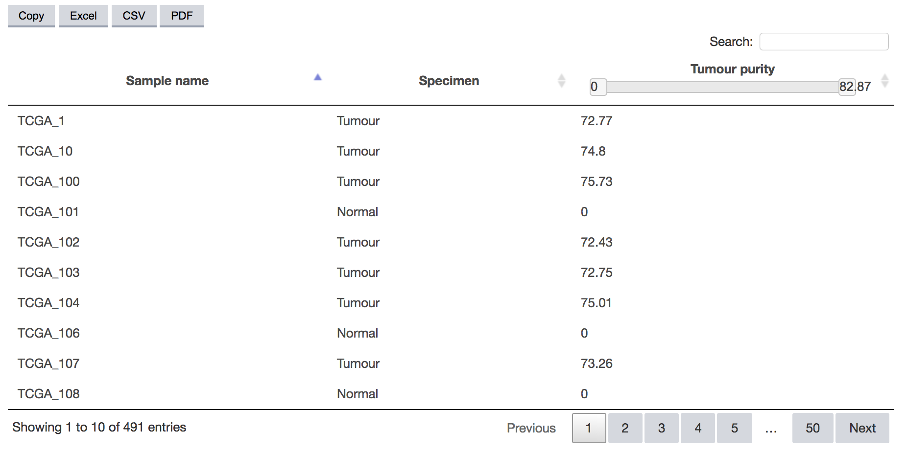
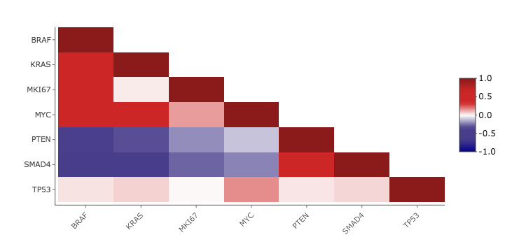
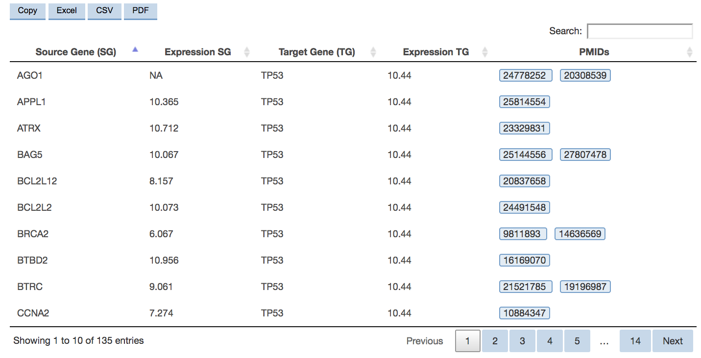

User Guide

In total, 1,488 transcriptomic profiles from 472 normal prostate tissues (83 healthy or benign prostate enlargement (BPH) and 389 normal adjacent), 33 high-grade prostatic intraepithelial neoplasia (HGPIN) samples, 880 samples from primary prostate cancer patients without metastasis (primary tumour), 31 samples from primary prostate cancer with metastasis (metastatic primary tumour) and 72 samples from metastatic prostate cancer tissues (metastasis) are available for evaluation of aberrantly expressed genes associated with prostate cancer initiation, development and progression to aggressive disease.
These data is presented within three different components reflecting the main step of the underlying integrative analysis framework:
Per-dataset: From this tab, you will be able to conduct multiple analyses, including principal component analysis (PCA), estimates of tumour purity, heatmap, expression profile and correlation plots, survival analyses and gene networks, using gene expression data from one of the 18 comprehensive and QC-checked datasets included in PIXdb.
Per-platform: This tab allows you to perform analyses using combined expression data from the same platform. Available analyses include PCA, estimates of tumour purity, heatmap, expression profile and correlation plots, as well as investigate gene networks. Although PIXdb contains datasets generated using eight different platforms (RNA-seq, Affymetrix Human Exon 1.0 ST, Affymetrix Human Genome U133 Plus 2.0, U133A, U95Av2, U95B, U95C and llumina HumanHT-12 v3.0), the analyses within this tab are available for data from five platforms (RNA-seq, Affymetrix Human Exon 1.0 ST, Affymetrix Human Genome U133 Plus 2.0, U133A, U95Av2), since datasets from Affymetrix Human Genome U95B, U95C and llumina HumanHT-12 v3.0 were represented by single datasets and are already available from the per-dataset tab.
Cross-platform: This tab contains results from the largest multi-cohort study of prostate cancer mRNA profiles to date. Using data derived from a combination of RNA-seq and microarray platforms, we applied our cross-platform data integration pipeline to an extensive set of prostate-related gene expression profiles, including normal prostate, HGPIN, primary prostate cancers from patients with and without metastasis, and metastatic prostate cancer tissues, to reveal the transcriptomics landscape of this disease. Here, you can find a summary table with gene ranks indicating individual gene's evidence for aberrant expression in various biological comparisons. You can also explore the results for each biological comparison using volcano plot and heatmap, as well as query these statistics for individual genes. A detailed description of the integrative analysis pipeline is described in GitHub repository.
To start the analysis you need to select one of the three analysis types: per-dataset, per-platform or cross-platform. Once you have selected a source, you will be directed to a page from which you will be able to conduct exploratory and investigative analyses.
The per-dataset and per-platform components contain a wide range of exploratory features, including principal component analysis (PCA), estimation of tumour purity (ESTIMATE) and whole-genome view of expression across various biological groups. The investigative analytical features include expression profiling, correlation, survival and gene network analyses, which are performed on the fly based on user-specific query.
The cross-platform component provides compendium of molecular events observed across different prostate cancer development and progression stages. It summarises information about cross-platform fold-change values and p-values with corresponding gene rankings according to the evidence for differential expression derived from all datasets. The autocomplete feature allows users to browse the gene data without searching for a specific entry and the analytical and visualisation layers based on pre-processed data reduce the response times.
| Analytical feature | Unit of analysis | Per-dataset | Per-platform | Cross-platform |
|---|---|---|---|---|
| PCA | Dataset | ✓ | ✓ | |
| Tumour purity | Dataset | ✓ | ✓ | |
| Expression heatmap | Dataset | ✓ | ✓ | |
| Expression profiles | Gene | ✓ | ✓ | |
| Expression correlations | Multiple Genes | ✓ | ✓ | |
| Survival analysis | Gene | ✓ | ||
| Gene networks | Gene, multiple genes | ✓ | ✓ | |
| Volcano plots | Dataset | ✓ | ||
| Heatmap (gene ranks) | Top ranked genes | ✓ | ||
| Statistics | Gene | ✓ | ||
| Summary table | Dataset | ✓ |
Results are presented in an interactive and informative graphical format using the open source visualization library Plotly. The various statistical and scientific charts allow users to visualise the annotation of data points, zoom in/out to focus on area of interest, exclude/include subgroups in the data, and download as static image files of publication quality. Summary tables are presented in an interactive tabular format with filtering, pagination, and sorting options, and are available for download in multiple formats.
Principal component analysis (PCA) reduces the dimensionality of data while retaining most of the variation in the dataset, making it possible to visually assess similarities and differences between samples and determine whether samples can be grouped. This exploratory analysis facilitates identification of the key factors affecting the variability in the mRNA expression data.
For each dataset, scatterplots representing the first two (top) and the first three (bottom) principal components (PCs) of the data are presented. In this instance, the plots present combined expression data from five sets of data produced with Affymetrix Human Genome U133 Plus 2.0 array, and including profiles from normal prostate and high-grade prostatic intraepithelial neoplasia (HGPIN) tissues, primary prostate cancer patients with and without metastasis, as well as samples from metastatic prostate cancer tissues. Each data point represents the orientation of a single sample in the transcriptomic space projected on the PCA, with different colours indicating the biological group to which each sample belongs. The percentage values in brackets on each axis indicate the amount of variance in the data explained by the corresponding PC.
The global variability of the data can also be assessed from the scree plot. Here, you can identify the fraction of total variance (y-axis) attributed to each PC (x-axis). The PCs are ordered by decreasing order of contribution to total variance.

Cancer samples frequently contain a small proportion of infiltrating stromal and immune cells that may not only confound the tumour signal in molecular analyses but may also have a role in tumourigenesis and progression. We apply ESTIMATE1 algorithm that uses gene expression data to calculate stromal score, immune score and estimate score, and infer tumour purity from these values.

The tumour purity estiamtes are also presented in form of an interactive table with filtering, pagination, and sorting options, which is available for download in multiple formats.

Unsupervised hierarchical clustering of the expression profiles is presented as heatmap with genes and samples represented by columns and rows, respectively. The samples charactersitcs are also indicated on the right hand-side. Only the 200 genes with the highest expression variance across samples are presented.
The interactive format of the heatmap allows users to visualize samples annotation as well as expession of individual genes, zoom in/out the area of interest, and download the plot as a static image file of publication quality.
This analytical module visualises the distribution of mRNA expression measurements across all samples for a user-defined gene. To provide a comprehensive overview of expression values across the biological groups, results are presented as both summarised and a sample views (box plot and bar plot, respectively). The box plot (top) demonstrates mRNA expression level quartiles (y-axis) in samples stratified according to their group (x-axis). It can be used to view if, and how, the expression of your gene of interest varies across the different biological groups. For more in-depth insight, a barplot (bottom) is also provided. It presents the expression level of the gene of interest in individual samples clustered by biological group and ordered within each group by expression value (y-axis) of the queried gene.
This module performs pairwise comparisons of expression profiles between multiple user-defined genes in selected dataset. For the queried set of genes (at least 2 and up to 50) the funtcion computes Pearson's correlation coefficients and corresponding p-values for all pairwise combinations of genes and displays the correlation coefficients in a form of pairwise comparison heatmap. The colour of each cell indicates correlation coefficient between corresponding genes labelled on the x-axis and y-axis. The heatmap colour key is displayed on the right-side of the plot with red and blue indicating high and low correlation values, respectively.

From this tab the relationship between the expression of the gene of interest and survival can be assessed. A univariate Cox proportional hazards (PH) regression is applied to the survival data and the samples are assigned to risk groups based on the median dichotomisation of mRNA expression intensities of the selected gene. Relationships are presented as Kaplan-Meier plots. The hazard ratio (HR) and 95% confidence intervals (CI) from the Cox PH model and associated log-rank p-value are presented in the top right corner of the figure.
To calculate HR for each gene, patients are dichotomised into low- and high-risk groups based on the expression measurements using best-performing cut-off2 algorithm. In brief, for successive percentiles of expression between the lower and upper quartiles the log-rank test p-values are computed and the best performing threshold is used as the final cut-off in regression analysis. This method is particularly useful for analysing datasets with different proportion of events, which condition the expected cut-off points distinguishing patients with low and high hazard rates.
For each comparative group defined in the dataset, the interactions between genes of interest and their primary neighbours can be displayed in an interactive network. The networks are based on manually curated protein-protein interaction from mentha3 database. In the resulting gene networks (top), nodes represent the genes while edges represent the interactions. Nodes are coloured according to the expression level (z-score) in the dataset of interest (bottom).
A detailed report of interactions composing the network, together with the list of hyperlined PMIDs that support each relationship, is provided in tabular format.

This tab presents volcano plots upon selecting the biological comparisons. Each volcano plot presents the -log10 of the combined p-values (the measure of the change statistical significance) on the y-axis as a function of log2 fold-change values (the measure of gene expression change) on the x-axis . Genes (dots) that are highly dysregulated are farther to the left and right sides, while highly significant changes appear higher on the plot. Genes are coloured based on their log2 fold-change with the colour key presented on the right-hand side. The user can chose to display only genes with certain magnitude of expression change by (un)selecting the log2 fold-change values on the right-hand side.
The presented heatmap illustrates integrative analysis results for the top-500 ranked genes in each biological comparisons. Genes and comparisons are represented by rows and columns, respectively. The heatmap colours represent genes' ranks indicating their evidence for aberrant expression in corresponding comparison. The positive and negative values indicate up- and down-regulation, respectively. The colour key is presented on the right-hand side.
This interactive heatmap allows user to to explore the combined rank for genes deregulated in individual prostate cancer development and progression stages by zooming in to the area of interest.
This tab summarises the cross-platform integrative analysis results and presents them in the context of the molecular alterations map (MAM) in prostate cancer transcriptomics space. The barplot (top) illustrates the log2 fold-change and combined p-values (-log10) for selected gene in various biological comparisons presented in MAM (bottom). The colour of each bar relects the gene's rank indicating its evidence for aberrant expression in corresponding comparison. The colour key is presented on the right-hand side.
This tab contains a table (top) displaying genes' annotations along with their percentile ranks in various biological comparisons, presented in the molecular alterations map (bottom). This summary table is presented in an interactive tabular format with filtering, pagination, and sorting options, and is available for download in multiple formats.